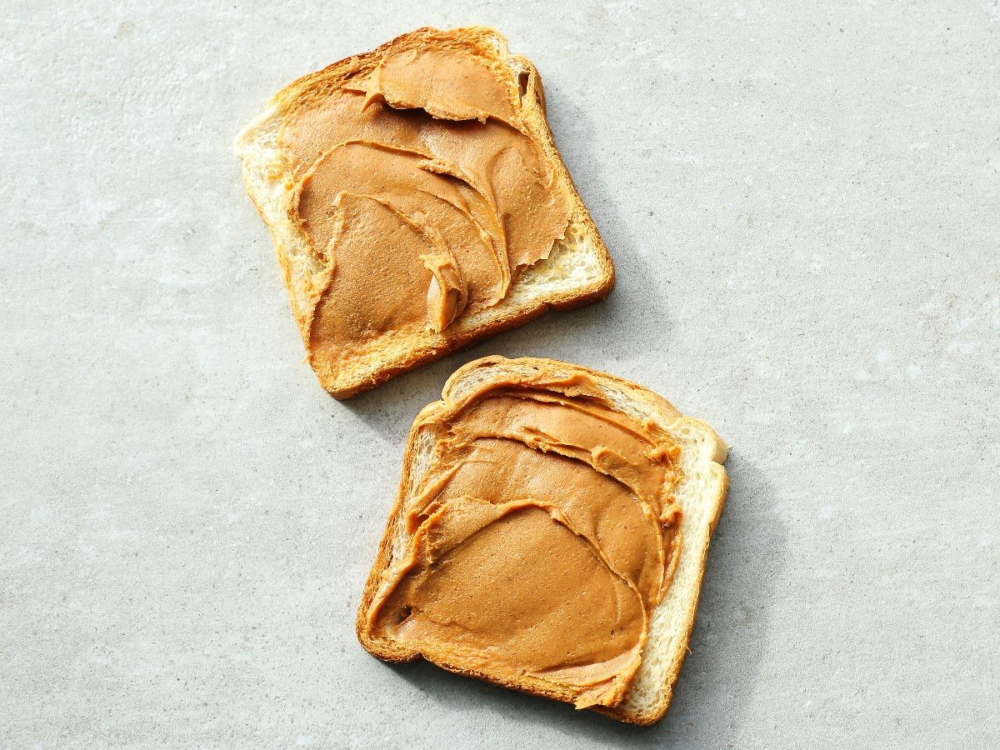

Peanut Butter Toast

Description
It's a classic snack, ready in like 5 minutes or less. You will need a toaster of course. The secret to good peanut butter toast is butter, underneath the peanut butter.
Ingredients
- 1 or more slices of white bread
- peanut butter
- butter
Steps
- Toast your bread in the toaster.
- Spread some butter on the toast.
- Spread some peanut butter on the toast